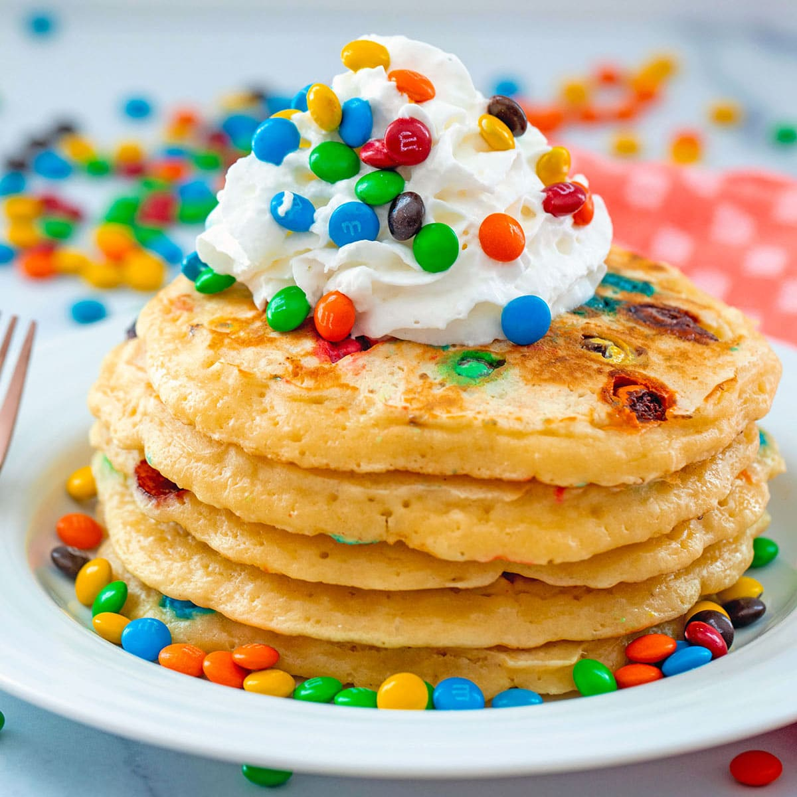

Pancakes Recipe

Description
Mornings are always better with pancakes, but why don't we add some colors and chocolate to create M&M pancakes! These are the instructions you need to follow
to make these delicious pancakes!
Ingredients
- All-purpose flour
- Granulated sugar
- Baking powder
- Salt
- Eggs
- Milk
- Vanilla extract
- M&Ms
- Whipped cream
Steps
- In a large bowl, whisk together flour, sugar, baking powder, and salt
- In a separate medium bowl, whisk eggs with milk and vanilla extract
- Pour the wet ingredients into the dry ingredients and stir until they're just combined, let batter rest for 5-10 minutes
- Heat a griddle and brush with cooking spray, then pour 1/3 cup batter and sprinked M&Ms over the top
- Cook for 2 minutes until bubbles start to form and then flip and cook for another minute until golden brown
- Serve pancakes with whipped cream and more M&Ms sprinkled over the top